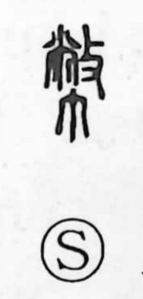

幣

Uncategorized
Kun: nusa | On: hei
ritual offering ・ currency ・ money
Explanation
幣 is a phono-semantic graph built on the phonetic 敝 (hei). 敝 itself combines the image of a ceremonial apron with the action sign 攴 “to strike,” suggesting a garment worn and frayed through ritual use. Classical glosses already define 幣 as 帛, “silk,” and by extension refer to 幣帛—the silk offerings presented to the gods. In ancient rites, valuable goods such as silk, jade, horses, and leather were given as nusa, offerings offered in prayer. From this ritual sense of a formal gift, the character’s meaning later broadened to encompass “currency” and “money.”